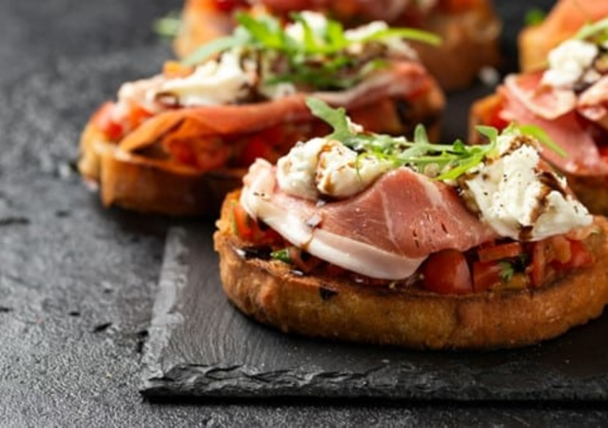
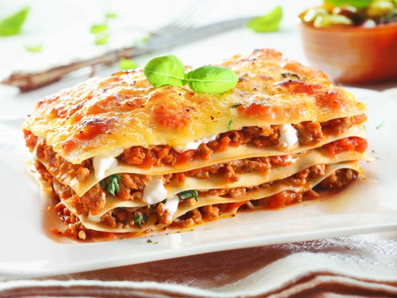
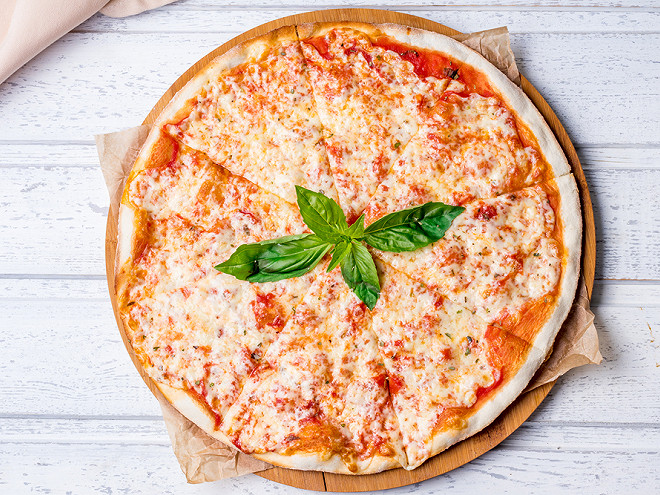
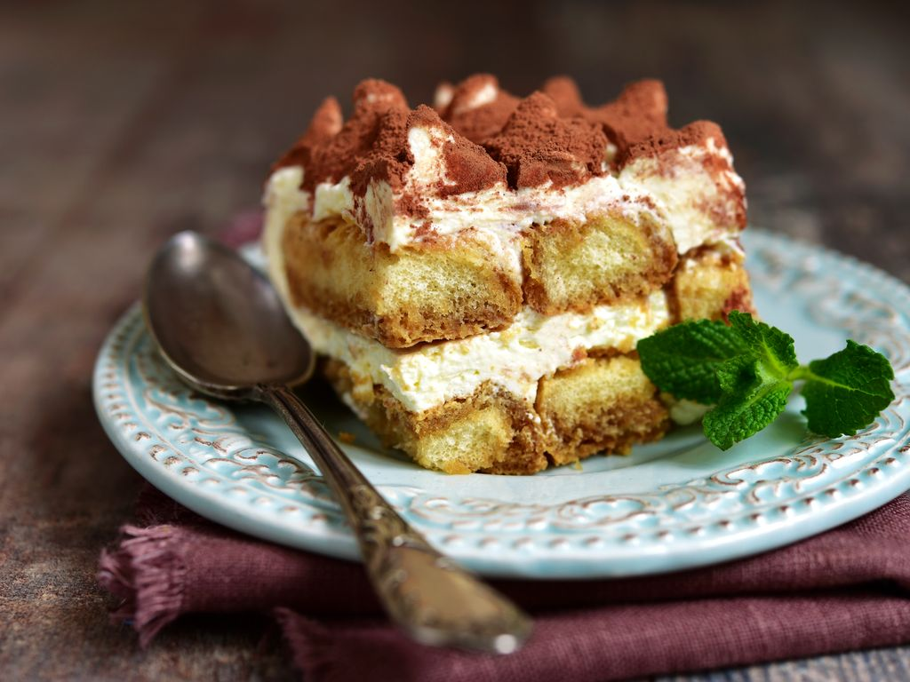
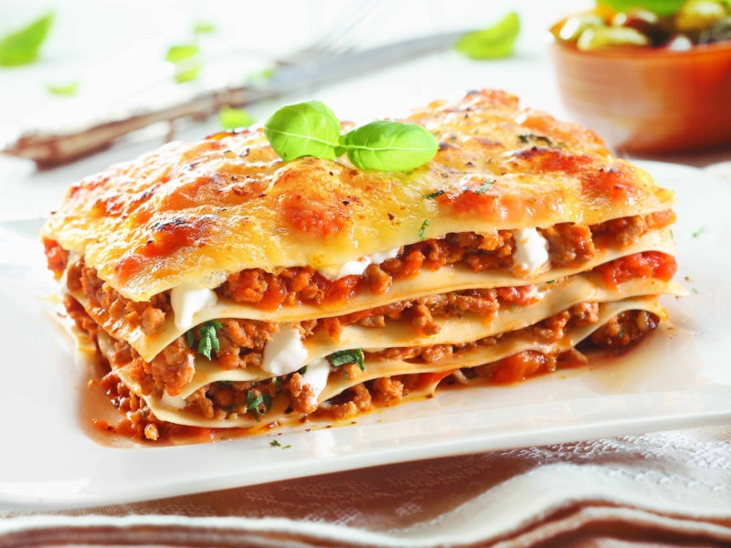
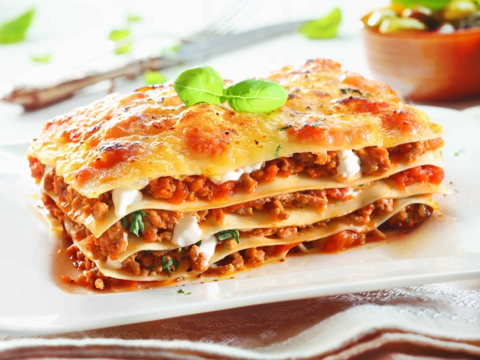
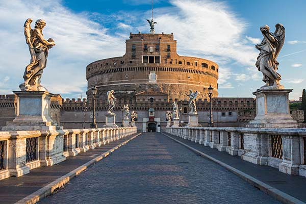
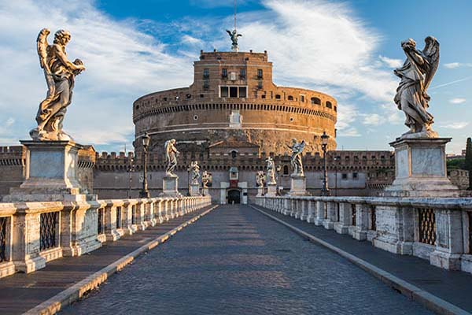
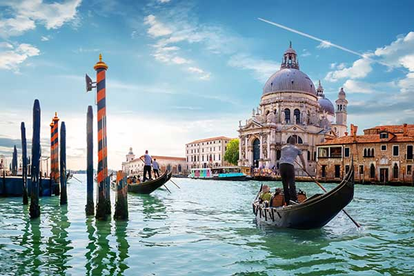
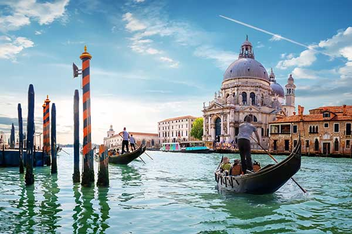

Le pays de l’art, de la gastronomie et de la dolce vita
Entre ses paysages magnifiques, son patrimoine historique incomparable, sa cuisine mondialement connue et
son art de vivre unique, l’Italie séduit tous ceux qui la visitent.
Des canaux romantiques de Venise aux ruelles animées de Naples, en passant
par les musées de Florence et les plages de Sicile, chaque coin du pays
raconte une histoire.
Mais l’Italie, ce n’est pas seulement les cartes postales et les clichés ! C’est aussi une culture riche,
des traditions fortes, des gens passionnés et chaleureux.
Sur ce site, tu découvriras :
🍕 Les spécialités culinaires qui font la fierté des Italiens
🏛️ Les grandes villes à ne pas manquer
🤌 Les habitudes culturelles et les stéréotypes les plus répandus
"Il dolce far niente" – Le doux plaisir de ne rien faire… une philosophie à l’italienne !
Les spécialité culinaire
L’Italie est mondialement célèbre pour sa cuisine riche, variée et savoureuse. Chaque région italienne a ses
propres spécialités, mais voici un aperçu des grandes spécialités culinaires italiennes les plus
emblématiques, classées par catégories :
🥗 Entrées
Bruschetta : pain grillé frotté à l’ail et garni de tomates, basilic, huile d’olive.
Carpaccio : fines tranches de bœuf cru assaisonnées d’huile d’olive, citron, parmesan.
Prosciutto e melone : jambon cru (prosciutto) avec du melon.

🍝 Plats de pâtes
Spaghetti alla carbonara : pâtes avec œufs, pancetta, pecorino, poivre noir.
Lasagne : couches de pâtes, sauce bolognaise, béchamel, fromage.
Pasta al Nero di Seppia : pâtes noires à l’encre de seiche, souvent avec calmars.

🍕 Pizzas
Pizza Margherita : tomate, mozzarella, basilic (couleurs du drapeau italien).
Pizza Quattro Stagioni : divisée en quatre sections avec différents ingrédients.
Pizza Calzone : pizza pliée en deux, souvent farcie de ricotta, jambon, épinards.

🍰 Desserts
Tiramisu : dessert à base de mascarpone, café, biscuits imbibés, cacao.
Cannoli : tubes de pâte frits remplis de ricotta sucrée, souvent avec des fruits confits.
Panna Cotta : crème cuite sucrée, souvent servie avec un coulis de fruits rouges.

🍷 Vins
Chianti : vin rouge de Toscane, souvent associé à la cuisine italienne.
Prosecco : vin mousseux léger, souvent servi en apéritif.
Barolo : vin rouge puissant du Piémont, vieilli en fût de chêne.
☕ Cafés
Espresso : café noir fort, servi en petite tasse.
Cappuccino : espresso avec lait chaud et mousse de lait, souvent saupdré de cacao.
Macchiato : espresso "taché" avec une petite quantité de lait.
🇮🇹 Les villes les plus emblématiques d’Italie
L’Italie regorge de villes magnifiques, chacune avec son propre charme, son histoire et ses attractions.
Voici
un aperçu des villes les plus emblématiques d’Italie :


 



 

 
